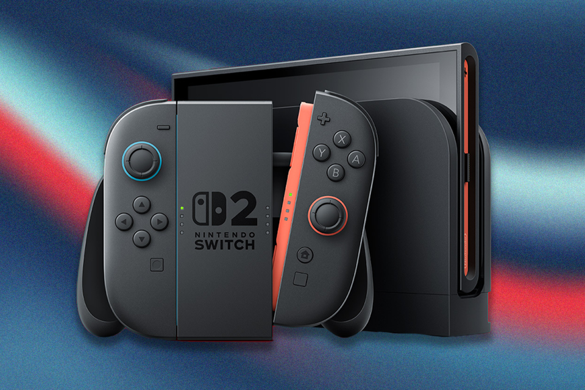
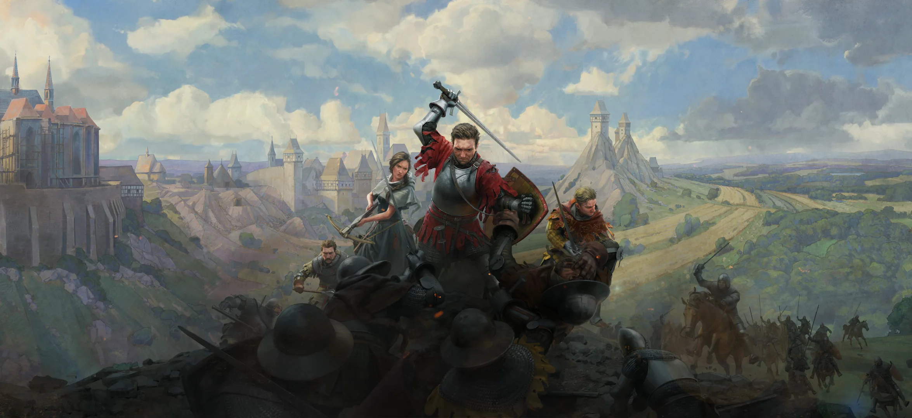
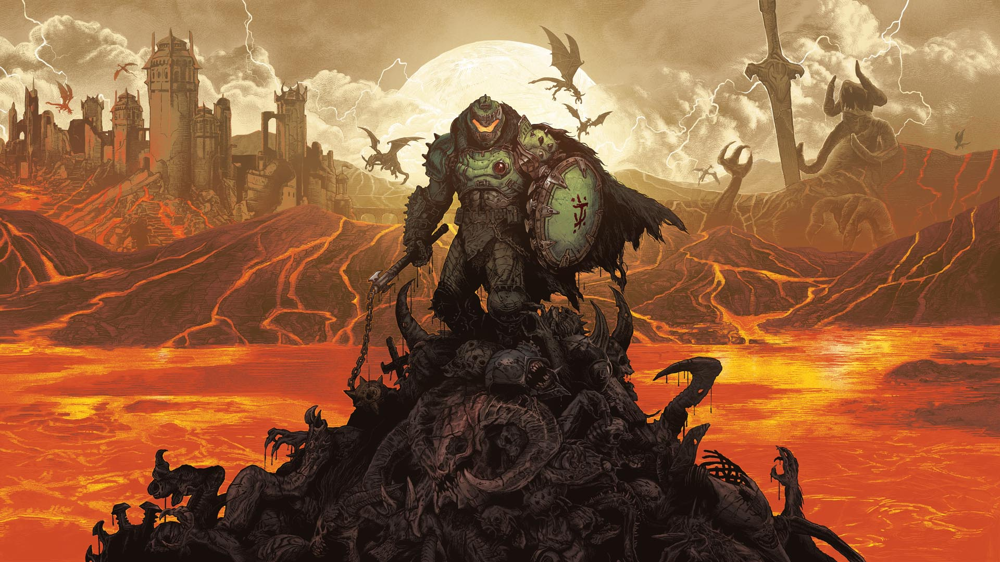
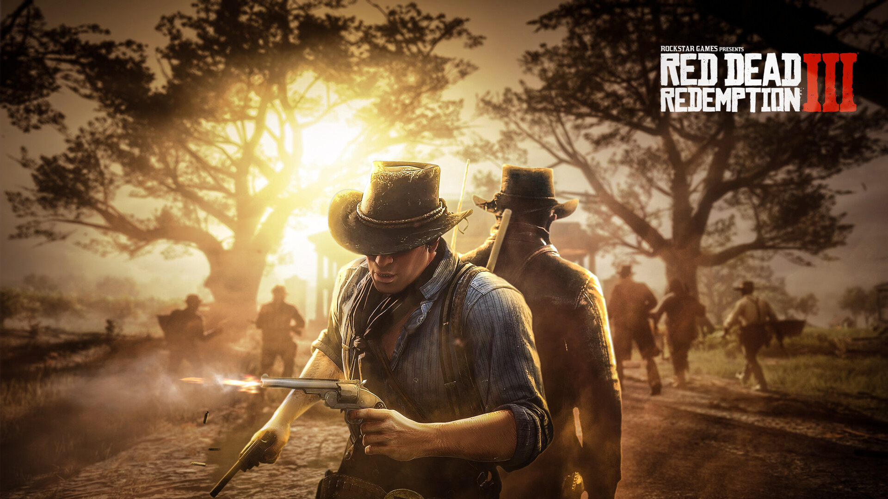
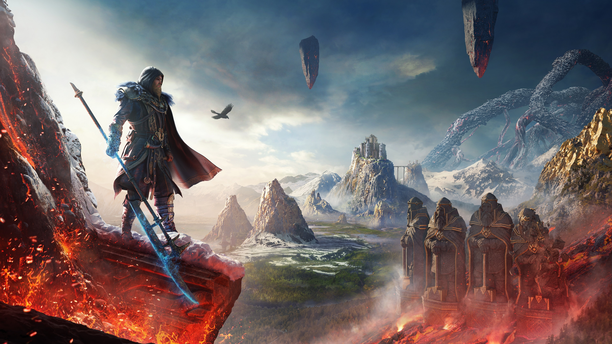
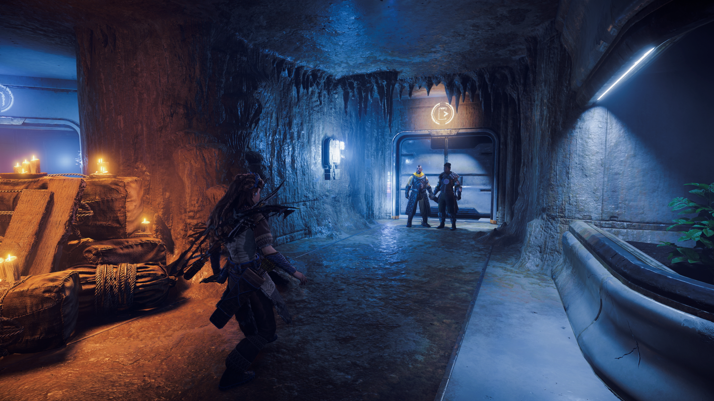

Nintendo Switch 2025
La Nintendo Switch 2025 traerá nuevas mejoras de hardware, compatibilidad con más títulos de AAA y experiencias inmersivas de realidad aumentada. Con un catálogo de juegos como el esperado *The Legend of Zelda: Tears of the Kingdom* y *Super Mario 3D World* renovado, promete ser la consola ideal para los jugadores casuales y hardcore por igual.

Kingdom Come: Deliverance II
La secuela de *Kingdom Come: Deliverance* lleva a los jugadores de vuelta a Bohemia en el siglo XV, con una expansión significativa del mundo abierto. Se espera una experiencia más profunda en términos de rol, combate y narrativa, permitiendo decisiones morales complejas y una gran fidelidad histórica. Un RPG que busca redefinir los estándares del género.

DOOM: Dark Ages
El regreso de *DOOM* en 2025 promete llevarnos a una nueva era de acción frenética. *DOOM: Dark Ages* introduce un escenario medieval apocalíptico donde el protagonista se enfrenta a demonios con un arsenal de armas antiguas y magia oscura. Un combate más táctico y brutal que nunca, con nuevas mecánicas y enemigos desafiantes.

Cyberpunk 2077: Phoenix
Después de los desafíos de su lanzamiento, *Cyberpunk 2077* regresa con una expansión llamada *Phoenix*, que promete mejorar todo lo que los jugadores esperaban. Nuevas mecánicas de juego, un nuevo mapa y una historia más profunda que explora el trasfondo de Night City y las corporaciones que la controlan. Los jugadores podrán explorar más y enfrentarse a decisiones más impactantes que nunca.

The Witcher 4: New Blood
En *The Witcher 4: New Blood*, los jugadores asumen el rol de un nuevo cazador de monstruos en un mundo aún más expansivo y dinámico. Con un enfoque renovado en la narrativa y el mundo abierto, el juego llevará a los jugadores a explorar nuevas tierras, completar misiones épicas y enfrentarse a criaturas aún más aterradoras. Con decisiones que afectarán el curso de la historia, será una experiencia inolvidable.

Red Dead Redemption 3
La nueva entrega de *Red Dead Redemption 3* llevará a los jugadores de nuevo al oeste americano, con una historia aún más rica y una jugabilidad que mezcla acción y exploración. Los fanáticos de la saga esperan ver la evolución de Arthur Morgan o incluso nuevos personajes en un mundo más inmersivo y lleno de posibilidades. El sistema de moralidad y las dinámicas del entorno seguirán siendo clave.

Assassin's Creed: Ragnarok
En *Assassin's Creed: Ragnarok*, los jugadores toman el control de un vikingo en la época de los dioses nórdicos, con una historia que mezcla mitología, exploración y acción. El juego promete una experiencia inmersiva con un sistema de combate más fluido y una narrativa más extensa que conecta el pasado con el futuro. ¿Será esta la última batalla entre asesinos y templarios?

Horizon Forbidden West: Echoes of the Past
La expansión de *Horizon Forbidden West* llevará a los jugadores a descubrir más secretos sobre el apocalipsis que devastó el mundo. Nuevas áreas por explorar, más criaturas para cazar y un sistema de combate mejorado harán de este juego una de las experiencias más esperadas para 2025. Aloy, nuestra heroína, continuará su lucha por salvar la humanidad.